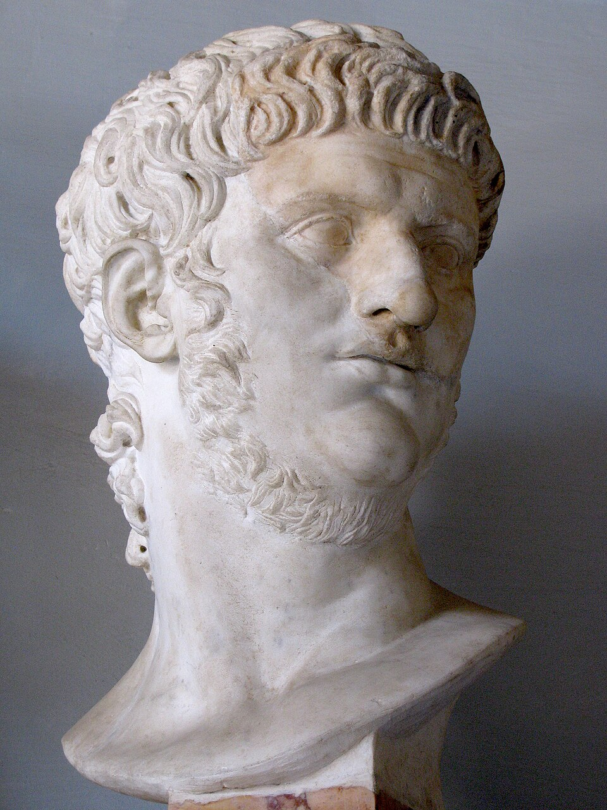

The Burning Lyre
Rome burned, and the world blamed the boy with the lyre. He has spent two thousand years tuning it — and he has finally decided to earn the legend.

The Burning Lyre
Rome burned, and the world blamed the boy with the lyre. He has spent two thousand years tuning it — and he has finally decided to earn the legend.
Feature map
Level-by-level features, as the figure refined them.
The Audience Gathers
Action · 2 CE.
Tier III · Blaster · Suggested CE ability: CHA · Primary verb: Perform Your technique save DC = 8 + your proficiency bonus + your CHA modifier. "The Audience" means every hostile creature within range that can hear you. A creature that is deafened — by any means, including its own doing — is not in the Audience. (A creature may deafen itself by stopping its ears as an action; clearing its ears takes an action.) Your Performance is sustained without an action once begun; it ends if you are incapacitated, if you choose to end it (no action), or if you are silenced and cannot produce the music by any means.
Action · 2 CE. You begin the Performance — lyre, voice, or both. While performing, at the start of each of your turns, choose the program: - Dirge (enemies): each creature in the Audience (60 ft, must hear you) takes 1d6 fire damage. No save — attention is the sure-hit: 1d6, every round. The counterplay is leaving earshot or deafening yourself. - Anthem (allies): each willing ally within 60 ft who can hear you gains 1d6 temporary hit points and +1 to saving throws until the start of your next turn. You choose one program per round, or split: Dirge and Anthem together is the technique's signature — one action begun, two audiences served. (Sustaining is free; the L1 cost is only to begin.)
Crescendo & The Critic's Ear
Crescendo — Bonus action · 3 CE.
Crescendo — Bonus action · 3 CE. Until the start of your next turn, the program intensifies: Dirge becomes 2d6 fire, Anthem becomes 2d6 temporary hit points and +2 to saving throws. The music is louder. Everyone knows it. The Critic's Ear (passive). You always know the location of every creature in your Audience, even if invisible or hidden — you hear them listening. This is not sight; it does not defeat total cover, but it defeats stealth-within-earshot.
Encore of Embers
Action · 5 CE.
Action · 5 CE. You play the fire directly. Choose up to three creatures in the Audience. Each must make a DEX save or take 5d6 fire damage (half on success). A creature that fails is ignited: at the start of each of its turns it takes 1d6 fire damage until it or an ally uses an action to douse the flames. (An ally's Anthem temp HP does not protect against this — the fire is personal now.)
Symphony of Ash
Action · 8 CE · Once per combat.
Action · 8 CE · Once per combat. The program becomes a storm. Until the start of your next turn: - The Audience extends to 120 ft. - Dirge becomes 3d6 fire, and each creature that takes this damage must make a CHA save or be frightened of you until the end of its next turn (it sees Rome burning behind you). - Anthem grants allies within the performance immunity to the frightened condition and advantage on their next attack roll before the start of your next turn.
Maximum, Domain, or equivalent.
Capstone material.
The Eternal City Aflame (Maximum)
Action · 10 CE. For 1 minute (sustained, no concentration — the city burns on its own), a 120-ft-radius zone of burning Rome manifests, centered on you and moving with you: - Hostile creatures that start their turn in the zone take 4d6 fire damage (DEX save for half). - The zone is difficult terrain for hostiles only — the flames part for the orchestra. - Willing allies that start your turn in the zone gain 10 temporary hit points and immunity to fear. - Your lyre cannot be destroyed while the city burns (it is everywhere now).
"What an Artist Dies in Me"
Capstone. Once per long rest, when you are reduced to 0 hit points while performing, you do not fall. You finish the piece: you immediately take a full turn (action, bonus action, movement) with all CE costs waived, your Dirge dice are doubled for that turn, and the Audience extends to 300 ft. At the end of that turn, you die — unless you have been restored above 0 HP, in which case the performance continues uninterrupted. An artist does not leave the stage. The stage leaves him.
Build-defining options.
Historical-figure techniques grant no feats — the figure's art is complete as written, and the builder's feat picker excludes these techniques. Take the progression as the build.